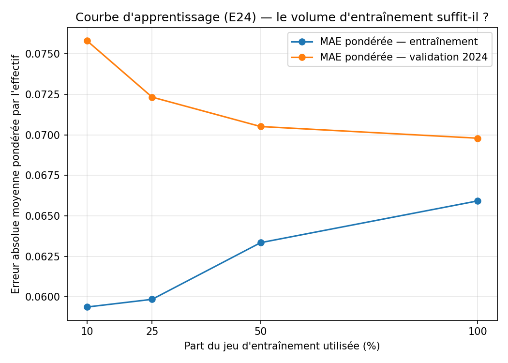
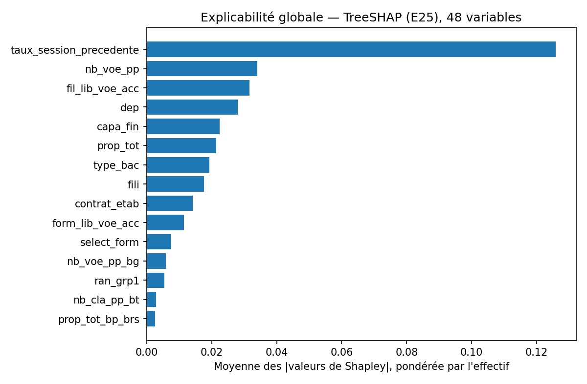
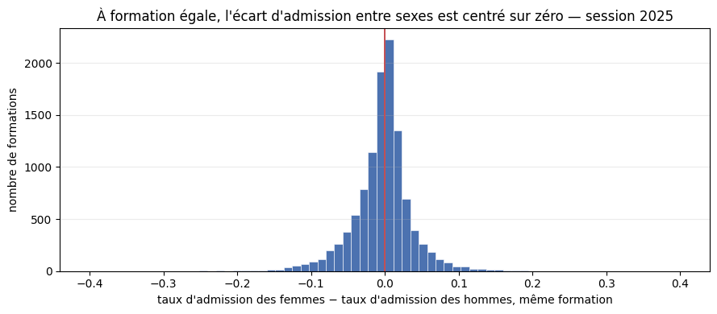
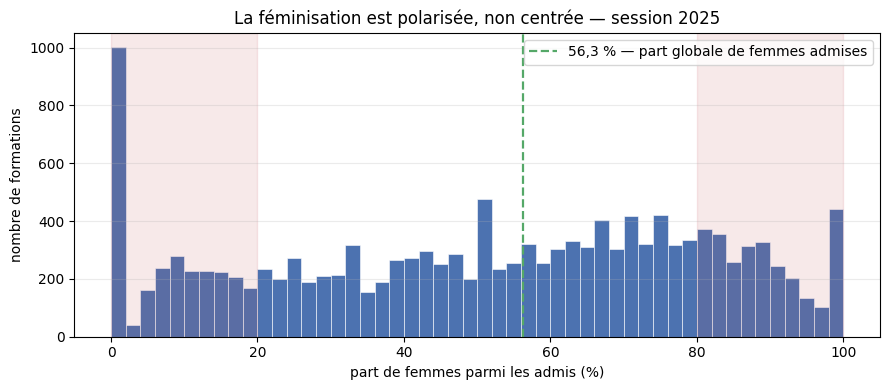
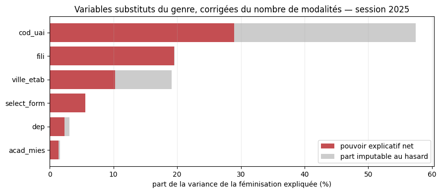
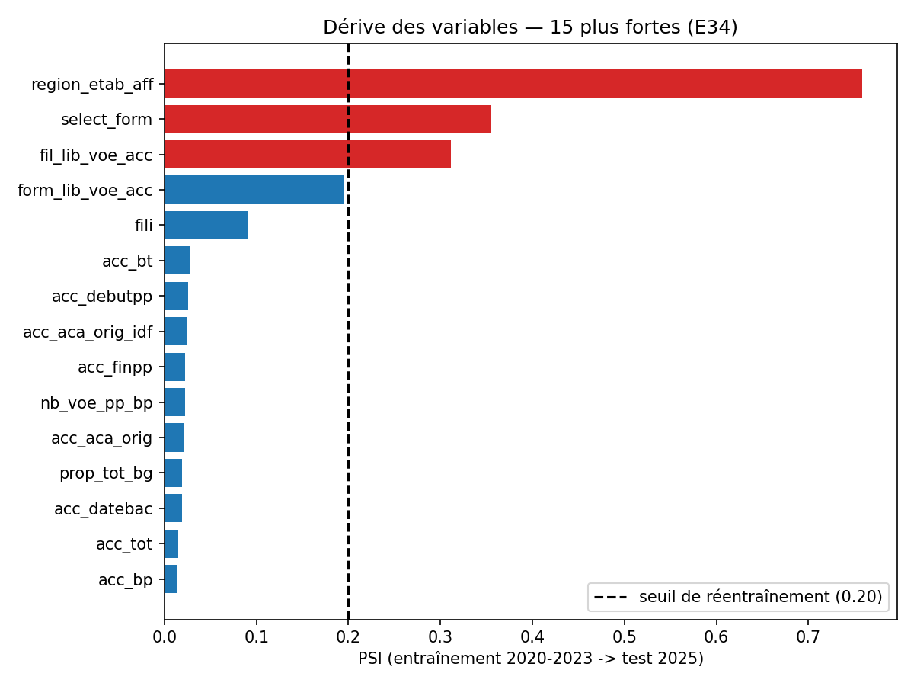
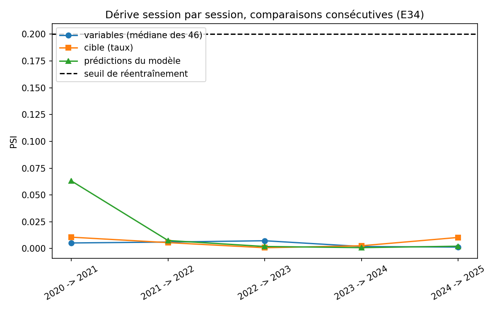
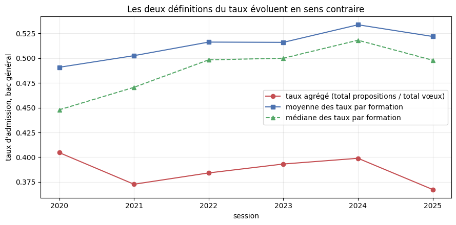

Bloc 4 · Déploiement de la solution IA
Le modèle d'accessibilité
Le terme accessibilité du score est le seul composant appris du système : un LightGBM entraîné sur les six sessions Parcoursup où le taux d'admission est réellement observé. Cette page réunit ce que j'ai spécifié, entraîné, expliqué et audité — y compris le résultat qui ne m'arrange pas.
MAE pondérée 0,0758 contre 0,0701 pour le taux de la session précédente, à couverture égale. Sa calibration s'y dégrade aussi. Je le rapporte tel quel dans chaque section concernée, et chaque réponse de /matching porte cette même réserve (page Service).
Spécification et cible
La cible est le taux d'admission observé par cellule (formation × session × type de bac × boursier), définie dans Données et label. Ici je documente quelles variables entrent dans le modèle et selon quel critère je les ai triées : analyse détaillée dans l'ADR 0013.
Le critère de tri
Je ne me suis pas contenté de me demander si une variable est postérieure à l'admission. Le nombre total de vœux reçus par une formation précède chronologiquement l'admission, mais un lycéen qui formule ses vœux en janvier ne peut pas le connaître : il se construit pendant la campagne.
Le critère retenu : la variable est-elle connue au moment où le lycéen formule ses vœux ? C'est pour cela que la plupart des compteurs Parcoursup (vœux, propositions, admis, capacité) ne sont pas exclus mais décalés d'une session : la même colonne fuite si elle est lue sur la session courante, elle est légitime si elle est lue sur la session précédente.
Le classement des 128 colonnes
Sur les huit millésimes téléchargés : 128 colonnes vues au moins une fois (de 85 en 2018 à 118 en 2021-2025, dont 83 communes aux huit sessions).
| Catégorie | Colonnes | Principe |
|---|---|---|
| Liste blanche, session prédite | 9 | Attributs de catalogue publiés avant la campagne : filière, type de formation, sélectivité, statut de l'établissement, territoire |
| Décalées d'une session | 35 | Compteurs de capacité, vœux, propositions, admis, académie d'origine, calendrier |
| Mentions, retenues sous réserve | 8 | Écartées par défaut — contamination du contrôle continu 2020 |
| Exclusions définitives | 73 | Interdites (4), substituts (3), instables (22), non complètes (10), hors périmètre (10), redondantes (23), à cardinalité excessive (1) |
| Total | 128 | Chaque colonne vue au moins une fois est classée |
À ces colonnes s'ajoutent les deux dimensions qui découpent chaque formation en cellules — type de baccalauréat et statut de boursier (ADR 0009). Sans elles le modèle prédirait une moyenne de six situations très différentes : écart médian de 8,5 points entre bac général et bac professionnel, jusqu'à 42,3 points en CPGE.
J'ai choisi une liste blanche des colonnes autorisées sur la session prédite, plutôt qu'une liste d'exclusion. Une liste d'exclusion laisse passer par défaut une colonne ajoutée par un futur millésime, sans qu'elle ait été examinée ; la liste blanche refuse par défaut. Neuf colonnes seulement sont autorisées sur la session prédite : filière, type de formation, sélectivité, statut du contrat, type d'établissement, département, académie, région. Aucune ne compte de vœux, de propositions ni d'admis.
| Motif d'exclusion | Nb | Ce qu'il signifie |
|---|---|---|
| Redondance | 23 | Recalculable depuis une colonne retenue |
| Instabilité | 22 | Disponibilité qui change dans la fenêtre 2020-2025 |
| Complétude non aléatoire | 10 | Absence qui code une information (filière), pas un manque |
| Hors périmètre | 10 | Décrit une population que le label ne couvre pas (phase complémentaire, autres terminales) |
| Interdite | 4 | Ventilation par sexe — le genre ne sert qu'à l'audit a posteriori |
| Substitut du genre | 3 | Détail dans la section Équité |
| Cardinalité excessive | 1 | Quasi-identifiant, pas une variable |
La redondance des pourcentages, une hypothèse fausse corrigée
Ma première hypothèse pour reconstituer les pourcentages était simple : le taux de boursiers rapporté au nombre total d'admis. Vérifiée sur les chiffres, elle était fausse — écart médian de 3,4 points, jusqu'à 97,5 au maximum. Le vrai dénominateur est le nombre de néo-bacheliers, pas l'ensemble des admis.
Reconstitution vérifiée des 19 colonnes de pourcentage sur 2025, écart maximal de 0,5 point (l'arrondi, rien de plus). Leçon retenue : un pourcentage ne se rattache pas à son dénominateur par la ressemblance de son nom.
L'identifiant d'établissement écarté pour deux raisons indépendantes
L'identifiant d'établissement est écarté pour deux raisons qui tiennent chacune seule :
- Cardinalité : 4 058 établissements. Le modèle mémoriserait l'établissement au lieu d'apprendre une règle transférable, et tout établissement absent de l'entraînement deviendrait imprédictible.
- Substitut du genre : c'est la variable la plus fortement associée au genre du catalogue, 28,9 % de pouvoir explicatif net une fois la cardinalité corrigée (section Équité).
Les deux raisons sont indépendantes : si l'exclusion ne tenait que par l'équité, elle s'effondrerait le jour où l'audit montrerait un impact disparate faible. Elle tient aussi par la cardinalité seule. L'information d'établissement ne disparaît pas totalement : les variables décalées, attachées à la formation, en portent une partie.
La retirer détruirait l'objet même du système, qui doit comparer des formations entre elles : la ségrégation par filière existe dans le catalogue lui-même, avec ou sans le modèle. C'est compensé par l'audit d'équité a posteriori. Le seuil qui ferait rouvrir cette décision : un impact disparate significatif porté par la filière, mesuré une fois le modèle entraîné — seuil désormais observé.
Le classement des 128 colonnes est écrit dans la configuration du modèle et vérifié par quatre contrôles automatisés : toute colonne citée existe réellement, toute colonne d'un millésime est classée, aucune colonne de résultat de campagne ne figure dans la liste blanche, aucune colonne n'appartient à deux catégories à la fois. Les quatre contrôles ont été vérifiés par mutation du code.
Variables
Le jeu de variables produit, sur les huit millésimes réels :
Une ligne en entrée (la table des faits d'admission, ADR 0015) produit exactement une ligne en sortie : 440 030 en entrée, 440 030 en sortie. La construction arrête le pipeline si une source porte plusieurs lignes pour une même clé, ce qui dupliquerait silencieusement des cellules sinon.
Le jeu de mention (huit colonnes liées aux mentions du baccalauréat) reste hors de la table par défaut : une option dédiée les ajoute, réservée à l'ablation qui décide si leur gain justifie le risque de contamination des sessions cibles 2021 et 2022.
Le mécanisme du décalage temporel
Le principe (ADR 0010, ADR 0013) : une variable n'entre dans le modèle que si elle est connue au moment où le lycéen formule son vœu. Deux traitements :
- la liste blanche (9 colonnes de catalogue) est lue par jointure directe sur la session prédite elle-même — ce sont des attributs déjà publiés au moment du vœu ;
- les 35 colonnes décalées (tous les compteurs de campagne) sont lues sur la session précédente. La table réconciliée est translatée d'une session avant la seconde jointure, plutôt que de soustraire un an côté cellules : les deux reviennent au même, ce choix laisse la table de base intacte pour les jointures suivantes.
Le contrat anti-fuite, vérifié par mutation
Un test qui vérifierait juste la présence des bonnes colonnes en sortie ne prouve rien : il passerait même si la jointure décalée lisait par erreur la session prédite au lieu de la précédente, tant que les deux sessions portent la même valeur en test. Il faut une donnée où la valeur diffère franchement entre les deux sessions.
Le test dédié utilise deux colonnes qui portent une valeur ordinaire à la session 2024 (40, 500) et une valeur extrême à la session 2025 (999999, 999999). Il vérifie que la table produite porte 40 et 500, jamais 999999.
J'ai vérifié les trois garanties par mutation du code : je casse volontairement le comportement visé, je relance les tests pour voir lequel échoue, puis je restaure.
| Mutation | Résultat observé |
|---|---|
| Décalage ramené de un an à zéro (les colonnes « décalées » lues sur la session prédite elle-même) | 4 tests échouent — dont celui qui vérifie que les variables décalées proviennent réellement de la session précédente — et 342 restent verts |
| Le genre et l'identifiant d'établissement réintroduits de force | Les deux tests qui interdisent leur présence échouent |
| Code restauré après chaque mutation | Suite revenue à 346 tests, 346 succès |
Le premier résultat compte le plus : seuls les tests qui dépendent réellement du décalage échouent, les 342 autres restent verts. Un test qui aurait échoué avec des tests sans rapport n'aurait rien démontré.
L'absence d'antécédent, mesurée, jamais comblée
28 425 cellules sur 440 030 (6,46 %) n'ont aucune ligne de la session précédente, pour deux raisons : la session cible 2020, dont le millésime précédent est 2019 — année où le numérateur du label n'est pas encore ventilé par type de bac — et une formation apparue pour la première fois à la session cible, qui n'a par construction aucune ligne antérieure.
Dans les deux cas la valeur reste manquante, jamais imputée. Combler fabriquerait un antécédent qui n'a jamais existé, et LightGBM traite nativement l'absence. La colonne la plus touchée l'est à 20,7 %, pour des raisons de complétude propres à la colonne, sans lien avec le décalage.
Un piège de nommage bloqué explicitement
La table des faits d'admission porte déjà, sur la session prédite, le numérateur et le dénominateur bruts du label. Par malchance de nommage, ce sont les mêmes noms que deux colonnes décalées de l'ADR 0013 (la même colonne source, lue à la session précédente).
Sans contrôle, une jointure standard aurait résolu ce conflit en renommant silencieusement les deux colonnes plutôt que d'échouer, et une variable de résultat de campagne aurait pu se retrouver du mauvais côté du contrat anti-fuite sans qu'aucun signal ne le révèle. La construction refuse désormais toute homonymie entre les colonnes du classement et les colonnes conservées de la table des faits, avant toute jointure.
Reproduction
PYTHONPATH=src python -m edumatch.features.buildÉcrit la table de variables au format Parquet et journalise le rapport de volumétrie et de complétude.
python -m pytest tests/unit/test_features_build.py tests/data/test_features_build_antifuite.py tests/data/test_features_build_run.py -vSuite complète vérifiée ce jour : 751 tests, tous verts. Les mutations décrites plus haut ont été appliquées puis retirées : elles ne laissent aucun test supplémentaire, seulement la preuve que les tests existants sont discriminants.
Protocole et baseline
Le numérateur du label ventilé par type de baccalauréat n'existe qu'à partir de la session 2020, vérifié absent en 2018 et 2019 sur le fichier source. Le label n'est donc calculable que sur six sessions, pas huit. Inclure 2018-2019 dans l'entraînement aurait mis deux sessions sans cible réelle dans le jeu d'apprentissage, ce qui viole l'exigence d'une cible observée, pas simulée.
| Rôle | Sessions | Cellules exploitables |
|---|---|---|
| Entraînement | 2020-2023 | 286 463 |
| Validation | 2024 | 76 408 |
| Test | 2025 | 77 159 |
| Total exploitable | 2020-2025 | 440 030 |
Le split est strictement temporel (ADR 0012) : aucune information postérieure à la session d'entraînement n'y entre. C'est ce qu'on appelle une fuite de données — utiliser, même indirectement, une information qui n'existait pas encore au moment de la décision prédite. Ici le split est borné aux six sessions où le label existe réellement.
Trois réserves posées avant tout résultat
Je les écris avant l'entraînement pour qu'un résultat bon ou mauvais ne soit pas attribué à tort au modèle alors qu'il tient à la donnée.
- Mentions faussées en 2020-2021. La part de mentions très bien passe de 7,4 % à 11,8 % en 2020 (changement de barème d'examen), et le retour à la normale est lent (29,8 % de sans-mention en 2021, contre 43,4 % avant 2020). Toute variable dérivée des mentions est contaminée pour ces deux sessions d'entraînement.
- Métriques par statut de boursier. La part de vœux boursiers passe de 12,5 % à 16,3 % en 2019-2020, puis retombe à 13,8 % en 2025. Les cellules boursières du test 2025 ne décrivent donc pas tout à fait la même population que celles de l'entraînement. La calibration et l'erreur sont rapportées séparément pour ces cellules.
- Dégradation attendue entre validation et test, à ne pas imputer d'emblée au modèle. La moyenne des taux par formation monte jusqu'en 2024 puis redescend en 2025 (0,522 → 0,534 → 0,522) : la cible elle-même n'est pas stable dans le temps. Une perte de performance sur le test doit d'abord être confrontée à ce mouvement avant d'être attribuée au modèle.
La session 2020 est conservée dans l'entraînement malgré la rupture sur les mentions : l'anomalie porte sur des variables candidates, pas sur la cible (tension médiane 11,8 vœux par place, alignée sur les autres sessions). L'écarter aurait réduit le jeu d'entraînement d'un quart sans raison mesurée sur le label.
Ce que la distribution du label impose
Le taux d'admission par cellule n'est pas distribué normalement. Il est étalé sur tout l'intervalle [0, 1], avec deux masses non négligeables aux bornes :
| Cellule | Taux nul | Taux à 1 |
|---|---|---|
| Bac général | 1,2 % | 13,1 % |
| Bac technologique | 12,9 % | 11,8 % |
| Bac professionnel | 21,6 % (2 779 formations) | 13,1 % |
Ces masses ne sont pas du bruit : une formation très sélective qui n'admet aucun bachelier professionnel produit un vrai zéro, une formation en tension nulle produit un vrai un.
Conséquences pour les métriques : l'erreur absolue moyenne pondérée par l'effectif de la cellule est retenue plutôt qu'une erreur quadratique, moins lisible sur une cible bornée avec masses aux extrêmes et plus sensible aux cellules à faible effectif. La calibration doit être vérifiée explicitement : un modèle bien calibré est un modèle dont les probabilités annoncées correspondent aux fréquences réellement observées — s'il annonce 60 % de chances d'admission, environ 60 % des cellules concernées doivent effectivement être admises. Un modèle peut avoir une bonne erreur moyenne tout en plaçant mal les cas extrêmes, ceux qui intéressent le plus un candidat.
La baseline, le plancher mesuré avant d'entraîner
La règle de référence n'a aucun paramètre appris : elle applique une règle fixe et note le résultat. C'est la référence que le modèle appris doit battre.
Règle retenue : pour une cellule à la session N, je prédis le taux observé de cette même cellule à la session N-1, avec le même bornage et le même traitement du dénominateur nul que le label lui-même.
Une baseline sans paramètre peut légitimement toucher le jeu de test parce qu'elle n'a rien à ajuster : ce qui est interdit, c'est de comparer plusieurs variantes d'un modèle appris sur le test et de retenir la meilleure — cela revient à entraîner sur le test sans le dire.
Résultat, par session
MAE pondérée par l'effectif de la cellule, sur les 440 030 cellules réelles :
| Périmètre | Couverture | MAE pondérée | MAE brute |
|---|---|---|---|
| 2020 | 0 % | — | — |
| 2021 | 89,9 % | 0,0811 | 0,1434 |
| 2022 | 91,5 % | 0,0761 | 0,1381 |
| 2023 | 92,1 % | 0,0686 | 0,1387 |
| 2024 (validation) | 92,3 % | 0,0676 | 0,1364 |
| 2025 (test) | 92,9 % | 0,0654 | 0,1269 |
| Validation + test | 92,6 % | 0,0664 | 0,1316 |
| Validation + test, repli inclus | 100 % | 0,0713 | 0,1477 |
J'ai recalculé ces chiffres indépendamment du code livré et je retrouve les mêmes valeurs.
Le plancher est haut, et c'est une information sur le problème. Reconduire simplement le taux de l'an dernier prédit à ±6,6 points en moyenne pondérée sur validation + test : la cible est fortement auto-corrélée d'une session à l'autre. Une baseline difficile à battre signifie que la marge de progression pour un modèle appris est plus étroite qu'il n'y paraît.
Deux règles plus naïves, mesurées à côté, en fenêtre expansive (la moyenne ne porte jamais sur la session cible ni sur une session future) : la moyenne pondérée par groupe (type de bac, boursier) atteint 0,2098 de MAE pondérée sur validation + test, la moyenne globale sans distinction de groupe 0,2124. Le taux de la session précédente les bat d'un facteur proche de trois : la persistance d'une cellule porte beaucoup plus d'information que la seule appartenance à un groupe large.
Le seuil posé avant d'entraîner
Pour justifier d'exister, le modèle appris doit descendre nettement sous 0,0664 de MAE pondérée sur validation + test à couverture comparable (92,6 %), et sous 0,0713 à couverture complète (100 %, repli inclus). Poser ce seuil maintenant, avant de voir le résultat de l'entraînement, rend la comparaison honnête.
Deux limites déclarées
- La session 2020 n'est prédictible par aucune baseline temporelle (couverture 0 %) : aucune session antérieure ne porte le numérateur ventilé par type de bac. C'est une propriété du protocole, pas un défaut du code.
- Les cellules sans antécédent reçoivent un repli par moyenne de groupe en fenêtre expansive, jamais une moyenne calculée sur tout l'entraînement (qui utiliserait des labels postérieurs à la session prédite). Avec ce repli la couverture passe de 92,6 % à 100 %, et la MAE pondérée se dégrade de 0,0664 à 0,0713 : c'est le coût exact du repli.
Évaluation et calibration
L'entraînement sépare la table de variables selon le split ci-dessus, entraîne un LightGBM pondéré par l'effectif de la cellule, et arrête ses hyperparamètres sur la seule MAE pondérée de validation — le test 2025 n'est touché qu'une fois, à la fin.
MAE pondérée, comparée au plancher à couverture égale (100 %, plancher avec repli) :
| Périmètre | Modèle | Plancher (couverture égale) | Verdict |
|---|---|---|---|
| Validation 2024 | 0,0690 | 0,0727 | le modèle passe devant |
| Test 2025 | 0,0758 | 0,0701 | le modèle reste derrière |
Le résultat est mitigé : en validation le modèle bat le plancher, en test il perd contre une règle qui ne suppose rien. Donner le taux de la session précédente comme variable explicite plutôt que de laisser le modèle apprendre ce quotient seul réduit l'écart en test de moitié (de 0,0119 à 0,0057) sans le combler ; cette variable arrive première en importance de gain, avec un gain sept fois supérieur à la deuxième. Un ensemble d'arbres n'apprend pas naturellement un quotient — le donner explicitement confirme en partie cette hypothèse.
Une erreur de méthode a été trouvée et corrigée dans le code : la première mesure comparait le modèle (qui prédit les 77 159 cellules de test) à un plancher qui n'en couvrait que 92,9 %, jugé sur son seul sous-ensemble facile, ce qui exagérait l'écart en sa faveur. La comparaison à couverture égale fait maintenant partie du rapport d'entraînement.
Ce qui reste n'est pas un défaut d'apprentissage, c'est un défaut de généralisation temporelle : le modèle capte des régularités de 2020-2023 qui ne se reconduisent pas en 2025, là où une règle qui ne suppose rien encaisse mieux la dérive — cohérent avec la non-stationnarité de la cible déjà observée (la moyenne des taux par formation remonte jusqu'en 2024 avant de redescendre en 2025).

Calibration, le modèle perd sur les deux tableaux en test
L'erreur de calibration attendue (ECE), pondérée par l'effectif, est calculée sur 10 tranches de taux prédit. Elle mesure l'écart moyen entre le taux annoncé et le taux réellement observé dans chaque tranche : plus elle est basse, mieux le modèle est calibré.
| Périmètre | ECE modèle | ECE plancher | Verdict |
|---|---|---|---|
| Validation 2024 | 0,0030 | 0,0141 | dix fois mieux que le plancher |
| Test 2025 | 0,0371 | 0,0322 | la calibration s'effondre, pire que le plancher |
En validation le modèle est très bien calibré. En test, il devient sur-confiant sur toute la plage médiane : il annonce 0,55 quand la réalité observée est 0,49. Il reste bien calibré aux extrêmes. Le modèle perd donc sur les deux tableaux en test, précision et calibration, sans qu'aucun des deux ne rattrape l'autre. Ventilée par filière, son erreur reste systématiquement supérieure à celle du plancher, l'écart se creusant pour le bac professionnel.
Courbe d'apprentissage
La MAE pondérée de validation est mesurée à 10, 25, 50 et 100 % du volume d'entraînement. L'échantillonnage est stratifié par session, pas par recul de la fenêtre temporelle, pour ne pas mélanger l'effet du volume et celui de la proximité temporelle avec la session cible.
| Volume | 10 % | 25 % | 50 % | 100 % |
|---|---|---|---|---|
| MAE validation | 0,0758 | 0,0723 | 0,0705 | 0,0698 |

L'écart entre entraînement et validation se referme de 0,0164 à 0,0039, et le gain marginal se divise par deux à chaque doublement du volume (0,0035 puis 0,0018 puis 0,0007). Deux chemins différents — la dégradation en test, et cette courbe — mènent à la même conclusion : ce n'est pas un manque de données, c'est une dérive temporelle. Plus de volume ne comblerait pas l'écart mesuré en test, et la fenêtre labellisée est de toute façon bornée à six sessions. La réponse relève de la surveillance de dérive et du réentraînement régulier, pas de la collecte.
Explicabilité
J'ai retenu LightGBM plutôt qu'un réseau de neurones pour trois raisons : des données tabulaires et hétérogènes, des valeurs manquantes structurelles, et l'explicabilité exacte que permet TreeSHAP sur un modèle à arbres.
SHAP (SHapley Additive exPlanations) attribue à chaque variable une part de la prédiction, en s'appuyant sur les valeurs de Shapley issues de la théorie des jeux : la contribution moyenne d'une variable, calculée sur toutes les façons de la combiner avec les autres. Sur un réseau de neurones, ce calcul exact serait hors de portée (le coût croît de façon exponentielle avec le nombre de variables) et il faudrait se contenter d'une approximation (KernelSHAP, LIME). Sur un modèle à arbres, TreeSHAP calcule les valeurs de Shapley exactement, en temps polynomial, en exploitant la structure des arbres. C'est cet avantage qui a pesé dans le choix de LightGBM.
J'ai vérifié l'axiome d'efficacité : la somme des contributions plus la valeur de base doit reconstituer exactement la prédiction. Vérifié à 2,1 × 10⁻¹⁵ près sur le modèle réel (écart résiduel dû à l'arrondi flottant, pas à une erreur de méthode), et confirmé par un test unitaire sur un modèle jouet dont la prédiction est connue par construction.
Le nombre de cellules est fini et connu à l'avance — 440 030 sur les six sessions labellisées — ce qui rend un précalcul complet raisonnable, plutôt qu'un calcul à la demande pour un flux de requêtes illimité. Mesuré sur l'exécution réelle : 440 030 cellules, 8,3 minutes, 99,8 Mo d'artefact. C'est une tâche de lot à relancer après chaque réentraînement, pas un calcul par requête de l'API : recalculer SHAP à chaque appel referait ce que le précalcul a déjà produit, pour un coût de latence inutile.
Classement global
Moyenne des valeurs absolues, pondérée par l'effectif :
| Variable | Part de l'explication |
|---|---|
| Taux de la session précédente | 33,5 % |
| Nombre de vœux, session précédente | 9,1 % |
| Libellé de filière | 8,4 % |
| Département | 7,5 % |
| Capacité de la formation | 6,0 % |
| Nombre d'admis, session précédente | 5,7 % |

TreeSHAP répartit le crédit selon l'usage réel qu'en font les arbres, pas selon une cause première qui n'existe pas dans un ensemble d'arbres — cette part cumulée est une seule information partagée en trois, pas trois signaux indépendants.
Un écart entre deux mesures d'importance
L'importance de gain de LightGBM (sous-produit de l'entraînement) donnait au taux de la session précédente une importance sept fois supérieure à la deuxième variable. TreeSHAP la ramène à 33,5 % de l'explication.
| Métrique | Question posée |
|---|---|
| Importance de gain (LightGBM) | Réduction de perte cumulée sur tous les nœuds de tous les arbres |
| Valeur de Shapley (TreeSHAP) | Contribution moyenne à une prédiction individuelle |
Une variable très utilisée en profondeur dans l'arbre — c'est le cas du taux précédent, qui sert à raffiner des coupures déjà bien orientées par d'autres variables — voit son gain surestimé par rapport à sa contribution réelle aux prédictions. Aucune des deux mesures n'est fausse, elles ne mesurent simplement pas la même chose.
Limites de SHAP
- Une valeur de Shapley explique ce que LightGBM a appris à partir des données d'entraînement, pas pourquoi un candidat est effectivement admis. Ce n'est pas une preuve causale.
- Avec des variables corrélées par construction (le quotient et ses deux composantes), le partage du crédit est défini par les axiomes de Shapley mais peut rester contre-intuitif : il dépend de la structure des arbres, pas d'une hiérarchie de causes.
- Une explication locale, pour une cellule donnée, ne se généralise pas à une autre — d'où la vue globale, qui répond à une question différente (l'effet moyen, pas l'effet pour un cas précis).
- La moyenne des valeurs absolues de Shapley n'est pas une importance causale : c'est une moyenne de contributions à des prédictions, pondérée par l'effectif de la cellule comme le reste de l'évaluation.
Le poids des substituts du genre dans l'explication globale (la filière et le département, corrélés au genre) est un signal transmis à l'audit d'équité, pas une conclusion à sa place : SHAP mesure la contribution d'une variable au modèle, l'audit d'équité mesure l'écart de traitement entre groupes sur les prédictions réelles.
Équité
Ce dispositif couvre deux temps : l'analyse exploratoire sur les données brutes, qui établit où l'inégalité se situe et quels substituts du genre existent parmi les variables candidates, puis l'audit sur les prédictions du modèle réellement entraîné, qui vérifie si l'exclusion du genre à l'entrée suffit en pratique.
Où se situe l'inégalité observée
À l'admission, à formation égale, l'écart entre femmes et hommes est proche de nul. Sur les 11 099 formations recevant au moins 30 vœux de chaque sexe, l'écart médian du taux d'admission est de −0,04 point, inférieur à 5 points dans 83,8 % des cas ; les femmes sont avantagées dans 48,8 % des formations, les hommes dans 50,8 %. L'inégalité observée dans le système d'orientation ne se joue donc pas au moment de l'admission, mais en amont, dans la formulation des vœux — hors du périmètre que le modèle peut corriger, puisqu'il n'intervient pas sur ce choix.
Réserve de méthode : le fichier source ne ventile par sexe que les admis, pas l'ensemble des vœux formulés. Cette comparaison porte donc sur une quantité un peu différente de celle qu'utilise le label du modèle (propositions rapportées aux vœux, toutes cellules).

La féminisation du catalogue est polarisée, pas répartie en cloche : 19,7 % des formations comptent moins de 20 % de femmes parmi leurs admis (2 775 formations, sur dénominateur non nul, voir plus bas), 17,9 % en comptent plus de 80 %, et seulement 21,5 % se situent entre 40 % et 60 %. La part globale de femmes admises, toutes formations confondues, est de 56,3 %.

Le chiffre de 2 954 formations à moins de 20 % de femmes, retenu jusqu'ici, incluait 179 formations qui n'admettent aucun candidat. Sur un dénominateur nul, le taux vaut mécaniquement 0 %, et ces formations se trouvaient comptées comme extrêmement peu féminisées alors qu'elles ne disent rien sur un processus d'admission qui n'a pas eu lieu. Le chiffre corrigé, dénominateur non nul, est 2 775 (19,7 %). Leçon retenue : tout ratio par sous-groupe doit être accompagné de l'effectif du sous-groupe, et un sous-groupe à effectif nul ou très faible doit être signalé plutôt que rapporté à égalité avec les autres.
Les substituts du genre, mesurés, pas supposés
Le genre n'entre jamais dans le modèle. La question posée ici est différente : quelles variables candidates du modèle permettent de reconstituer le genre par un autre chemin ? Une variable fortement corrélée au genre agit comme un substitut, même en l'absence de toute variable de genre déclarée.
Mesure retenue : information mutuelle entre chaque variable candidate et le sexe des admis, corrigée du nombre de modalités de la variable par permutation (5 tirages aléatoires, graine fixée à 42, pour estimer la part d'information mutuelle imputable au seul hasard de cardinalité).
| Variable | Observé | Hasard (permutation) | Net |
|---|---|---|---|
| Identifiant d'établissement | 57,5 % | 28,5 % | 28,9 % |
| Filière | 19,6 % | 0,1 % | 19,5 % |
| Ville de l'établissement | 19,1 % | 8,9 % | 10,2 % |
| Sélectivité | 5,6 % | 0,0 % | 5,6 % |
| Département | 3,1 % | 0,8 % | 2,3 % |
| Académie | 1,6 % | 0,2 % | 1,4 % |

Sans la correction par permutation, l'identifiant d'établissement — qui compte plusieurs milliers de modalités — aurait affiché un pouvoir explicatif proche du double de sa valeur réelle : une variable à haute cardinalité capte mécaniquement de l'information mutuelle avec n'importe quelle cible, simplement parce qu'elle offre plus de façons de séparer les observations. Leçon retenue pour toute mesure d'association future dans ce projet (ablation, dérive) : ne jamais comparer des variables de cardinalité différente sans corriger ce biais.
La contradiction qui structure le dispositif d'équité
L'hypothèse de départ désignait l'académie et l'établissement d'origine comme substituts principaux à surveiller. La mesure infirme cette hypothèse sur l'académie : elle n'explique que 1,4 % du genre, une fois la cardinalité corrigée. Le deuxième substitut le plus puissant, après l'établissement, est la filière (19,5 %) — une variable qu'on ne peut pas retirer du modèle sans détruire sa capacité à distinguer un BTS d'une CPGE.

Conséquence assumée : le modèle reconstituera partiellement le genre par la filière, quoi qu'il arrive. Exclure la variable de genre à l'entrée est nécessaire mais insuffisant pour garantir l'absence de discrimination indirecte. Le dispositif d'équité repose donc sur trois niveaux :
- Exclusion à l'entrée — le genre n'est jamais une variable du modèle (vérifié par test).
- Mesure des substituts — ce carnet, à rejouer à chaque évolution notable du catalogue de variables.
- Audit a posteriori sur les prédictions — puisque l'exclusion ne suffit pas, la vérification qui compte porte sur l'écart de prédiction entre sous-groupes de genre, mesuré sur les sorties réelles du modèle entraîné, pas sur ses entrées.
L'audit sur les prédictions réelles
L'audit ne relance rien : il appelle la même fonction d'entraînement (même split, même modèle déjà arrêté sur la validation) pour récupérer les prédictions du test 2025, puis les ventile selon les quatre dimensions retenues : type de baccalauréat, statut de boursier, territoire, genre.
Le genre n'entre jamais dans le modèle ; ce module ne le lit que pour l'audit, à partir des compteurs de vœux et d'admissions par sexe déjà présents dans la table réconciliée mais jamais transmis au modèle. Le genre d'une formation est construit sur la composition des candidats, jamais sur celle des admis, qui est en partie ce que le modèle prédit.
La définition d'équité retenue, et ce qu'elle sacrifie
Définition privilégiée : la calibration par groupe — un taux prédit de 60 % doit correspondre à un taux observé de 60 % dans chaque groupe, quel que soit le groupe. Ce choix est incompatible avec deux autres définitions courantes d'équité, la parité démographique (même taux de recommandation pour chaque groupe) et les cotes égalisées (même taux de vrais positifs pour chaque groupe), dès que les taux de base diffèrent entre groupes. C'est un théorème d'impossibilité — ces trois critères ne peuvent pas être satisfaits en même temps, sauf cas dégénéré — pas un choix de goût. Ce que ce choix sacrifie : ni l'égalité des taux de recommandation entre groupes, ni l'égalité des vrais positifs entre groupes ne sont garanties par ce dispositif.
Le passage d'un taux continu à une décision
Le ratio d'impact disparate (règle des quatre cinquièmes : le taux de sélection du groupe le moins favorisé ne doit pas être inférieur à 80 % de celui du groupe le plus favorisé) se définit sur une décision binaire, alors que la cible du modèle est un taux continu dans [0, 1]. Une cellule est comptée « recommandée » si le taux prédit atteint au moins 50 %, plutôt qu'un partage par médiane qui produirait toujours 50 % de cellules positives dans chaque groupe par construction et masquerait tout écart réel. Le taux de sélection par groupe est pondéré par l'effectif de la cellule, cohérent avec la pondération qui gouverne le reste du projet.
Résultat, non atténué : un écart réel qui passe sous le seuil légal
Sur les formations à plus de 80 % de candidates femmes :
| Modèle | Plancher | |
|---|---|---|
| ECE (formations très féminisées) | 0,066 | 0,048 |
| ECE (autres formations) | 0,032 à 0,034 | — |
| Ratio d'impact disparate | 0,76 | 0,63 |


Le modèle sur-annonce les chances d'admission sur les formations très féminisées — une erreur de calibration presque deux fois supérieure à celle mesurée ailleurs — et le plancher y est mieux calibré que le modèle appris. Le ratio d'impact disparate de ce groupe reste sous le seuil des quatre cinquièmes (0,80), à 0,76, même si le modèle améliore nettement le 0,63 du plancher.
Il fait mieux que le plancher sur la sélection, moins bien sur la calibration — les deux verdicts doivent être rapportés ensemble, aucun ne rachète l'autre.
Les substituts, mesurés sur les prédictions
Les substituts identifiés plus haut (filière 19,5 % net, département 2,3 % net, sur le genre observé) se retrouvent dans l'explication SHAP du modèle : ensemble ils totalisent 14,2 % de l'explication globale, alors que le genre n'entre jamais en entrée. Le département y pèse le plus lourd dans l'explication du modèle tout en étant le plus faible en corrélation au genre : importance au modèle et corrélation à un attribut protégé sont deux axes distincts. Une variable peut compter beaucoup pour le modèle sans être un vecteur important de discrimination indirecte, et inversement.
Ce que confirme le dispositif à trois niveaux
L'exclusion à l'entrée (niveau 1) ne suffisait pas à garantir l'absence de traitement différencié, et cet audit le prouve concrètement. Le seuil qui rouvrirait l'arbitrage sur la filière (« un impact disparate significatif porté par la filière ») est désormais observé — la suite du projet (Model Card, plan de gouvernance) doit porter ce résultat sans l'atténuer.
Ce qui reste ouvert
- Réconcilier l'écart de méthode déjà identifié entre l'analyse exploratoire (83,8 % de formations à moins de 5 points d'écart d'admission) et l'audit (73,4 % rapporté par le module de mesure) — un filtre d'effectif probablement différent entre les deux mesures. Point ouvert.
- Rejouer la mesure de substituts sur le jeu de variables final si un prochain cycle d'entraînement en change la composition.
Ablation
Cette mesure vérifie ce que chaque bloc de variables apporte réellement au modèle retenu, plutôt que de le supposer, et déclare la seule mesure que je ne peux pas encore faire : l'apport de Sirene.
Le protocole
Sept variantes, entraînées avec exactement les mêmes hyperparamètres et le même split que la configuration de production (ADR 0012 pour le split). Seule la composition du jeu de variables change d'une variante à l'autre.
Chaque variante est jugée sur la validation 2024, jamais sur le test 2025 : comparer des configurations sur le jeu de test transformerait ce choix en réglage d'hyperparamètre déguisé, ce que le protocole interdit. Le test n'est consulté qu'une fois, pour la configuration déjà retenue en production — son score est rapporté tel quel, jamais recalculé ici.
Pour la même raison, la comparaison d'équité entre le modèle complet et la variante sans les substituts du genre porte elle aussi sur la validation 2024, et non sur le test 2025 déjà consulté par l'audit de production : un second passage sur ce jeu, pour une question différente, reste un second passage.
Le genre n'entre dans aucune des sept variantes comme variable d'entrée. Le retrait des substituts (filière, sélectivité, département, académie) est un retrait de variables licites du modèle ; le genre lui-même n'est lu, comme dans l'audit d'équité, que depuis la table réconciliée, pour classer la composition des formations et juger l'équité a posteriori.
Résultats, sept variantes
MAE pondérée de validation :
| Variante | Variables | MAE validation | Écart | ECE |
|---|---|---|---|---|
| Modèle complet (référence) | 48 | 0,0698 | 0,0000 | 0,0038 |
| Sans les décalées | 11 | 0,1120 | +0,0422 | 0,0196 |
| Sans le taux précédent | 46 | 0,0793 | +0,0095 | 0,0109 |
| Taux précédent seul | 3 | 0,0768 | +0,0071 | 0,0088 |
| Mentions incluses | 56 | 0,0695 | −0,0003 | 0,0038 |
| Identifiant d'établissement réintroduit | 49 | 0,0699 | +0,0001 | 0,0029 |
| Sans les substituts du genre | 44 | 0,0704 | +0,0006 | 0,0049 |
Score de test de la configuration retenue, rapporté et non recalculé : MAE pondérée 0,0758 (n = 77 159) — valeur enregistrée par le registre d'expériences, 0,075755 avant arrondi, identique à celle des autres sections de cette page.
Premier résultat : l'essentiel de la performance vient du signal de l'an dernier
Retirer les 35 variables décalées, et le taux de la session précédente qui en dépend, fait passer la MAE pondérée de validation de 0,0698 à 0,1120, soit +0,0422. C'est de très loin le retrait le plus coûteux.
À l'inverse, passer de 3 variables (les deux dimensions de cellule et le taux de la session précédente seul) au jeu complet de 48 ne gagne que 0,0070, soit environ 9 % relatif de l'erreur du modèle réduit.
L'essentiel de la performance vient de connaître le taux d'admission de l'an dernier sur la même cellule. Les 45 autres variables affinent la prédiction, elles ne la portent pas. La différence entre le retrait du taux seul (+0,0095, coût du quotient donné en clair plutôt qu'à reconstituer depuis son numérateur et son dénominateur bruts) et le retrait de l'ensemble des décalées (+0,0422, coût du signal N-1 dans son entier) confirme la lecture : ce n'est pas la mise en forme du quotient qui porte le modèle, c'est la disponibilité du signal lui-même.
Ce résultat change la lecture de l'exigence d'ablation : le modèle est en grande partie une règle de persistance affinée par le catalogue, pas 48 signaux équivalents.
Deuxième résultat : retirer les substituts du genre ne répare pas l'équité
Retirer les quatre substituts du genre encore présents dans le modèle (filière, sélectivité, département, académie, qui totalisent 14,2 % de l'explication SHAP globale) coûte +0,0006 de MAE pondérée en validation, un coût quasi nul.
Ce retrait ne rend pas le modèle plus équitable. Sur la validation 2024, le ratio d'impact disparate du groupe de formations à plus de 80 % de candidates femmes passe de 0,66 à 0,62 en retirant les substituts — il se dégrade légèrement, sans franchir le seuil des quatre cinquièmes dans un sens ou dans l'autre. Les deux autres groupes mesurés restent stables : mixte 0,82 → 0,83, minoritaire 1,00 → 1,00.
Ce résultat est contre-intuitif et rapporté tel quel : retirer une variable corrélée au genre aggrave ici, très légèrement, l'écart plutôt que de le réduire. L'explication tient à ce que l'ADR 0013 avait déjà anticipé au sujet de l'identifiant d'établissement : l'information qui permet au modèle de reconstituer le genre n'est pas concentrée dans ces quatre colonnes de catalogue, elle est diffuse dans les variables décalées attachées à la même formation — celles qui portent l'essentiel du signal. Retirer quatre colonnes ne retire pas ce canal diffus.
L'exclusion de variables ne peut donc pas être le seul levier d'équité du projet. Ce résultat conforte le choix déjà fait de fonder l'équité sur la calibration par groupe, mesurée a posteriori sur les prédictions, plutôt que sur la seule composition du jeu de variables en entrée. Il vient compléter, sans le recouvrir, le résultat déjà rapporté sur le test 2025 dans la section Équité (ratio d'impact disparate à 0,76 pour le modèle complet, mesuré sur le périmètre de production) : les deux mesures portent sur des jeux et des comparaisons différents et ne doivent pas être confondues.
Troisième résultat : deux exclusions confirmées
L'ADR 0013 fixait, pour chacune, un seuil de reconsidération.
Mentions (écartées par défaut à cause de la contamination du baccalauréat en contrôle continu 2020-2021) : les réintroduire apporte un gain de 0,0003 sur la validation. Le seuil de reconsidération de l'ADR est un gain supérieur à 0,01 — non franchi, exclusion confirmée.
Identifiant d'établissement (exclu pour cardinalité et pour être le plus fort substitut du genre mesuré, 28,9 % net) : le réintroduire dégrade légèrement la MAE pondérée de validation, +0,0001. Le seuil de reconsidération de l'ADR est une perte mesurée à l'exclure — c'est l'inverse qui est mesuré : aucune perte n'est constatée à l'exclure, donc l'exclusion reste confirmée.
Les deux arbitrages traversent l'ablation sans être ébranlés.
Sirene, ce qui ne peut pas être mesuré aujourd'hui
L'ablation devait mesurer l'apport de Sirene par ablation, au même titre que les autres blocs de variables. Ce n'est pas possible en l'état : la chaîne de nomenclatures NAF ↔ ROME ↔ formation ne relie aucune formation Parcoursup — vérifié sur les huit millésimes, aucun ne porte de code RNCP, NSF ou ROME exploitable par cette chaîne (voir Nomenclatures).
Sirene n'a donc jamais eu l'occasion d'entrer dans la table de variables ni dans le modèle entraîné. Il n'existe, à ce jour, rien à retirer d'un modèle où cette source n'est pas entrée.
Un écart nul mesuré serait un résultat, comme ceux qu'ont produit les mentions ou l'identifiant d'établissement. Une ablation impossible à réaliser est une limite du dispositif : l'exigence de mesurer l'apport de chaque source reste, pour Sirene, à satisfaire une fois la chaîne de nomenclatures rattachée. Ce point reste ouvert.
Ce que je n'ai pas fait
- Je n'ai pas rejoué la comparaison d'équité substituts du genre sur le test 2025 : elle reste, par construction du protocole, cantonnée à la validation pour ne pas consommer une seconde fois le jeu déjà audité.
- Je n'ai pas cherché d'autre variante que les sept prescrites par l'ADR 0013 et par les résultats d'explicabilité et d'équité. Une ablation plus fine, colonne par colonne parmi les décalées, n'a pas été conduite : le résultat dominant (le bloc des décalées porte l'essentiel de la performance) rend cette décomposition secondaire à ce stade.
- Je n'ai pas mesuré l'apport de Sirene, pour la raison exposée ci-dessus.
Détection de dérive
Analyse complète dans l'ADR 0018. Le seuil de réentraînement figurait déjà dans la configuration avant toute mesure sur des données réelles. Cette mesure a confronté ce chiffre à une dérive observée, et a tranché s'il aurait pu signaler à l'avance le défaut déjà connu du modèle : il bat la baseline en validation 2024 (MAE pondérée 0,0690 contre 0,0727) mais la perd en test 2025 (0,0758 contre 0,0701), et sa calibration s'effondre (ECE 0,0030 → 0,0371, détail dans la section Évaluation et calibration).
Trois dérives distinctes, jamais confondues
Le module de détection distingue trois questions, sur la fenêtre où le label existe (2020-2025, six sessions) :
- Dérive des variables — la distribution des entrées change-t-elle d'une session à l'autre ? Mesurée sur les 46 variables licites du modèle (les deux dimensions de cellule, les neuf colonnes de catalogue, les 35 colonnes décalées), pas sur les deux colonnes dérivées ajoutées à l'entraînement (le taux de la session précédente et l'indicateur d'antécédent), qui ne sont pas des observations mais un calcul dérivé des variables décalées déjà mesurées.
- Dérive de la cible — la distribution du taux observé change-t-elle ?
- Dérive des prédictions — la distribution de ce que prédit le modèle déjà entraîné change-t-elle ? Comparée sur sa distribution, pas sur son erreur par rapport à la cible, déjà couverte par l'évaluation.
Deux familles de comparaison : la comparaison de production (les quatre sessions d'entraînement 2020-2023 regroupées comme référence, contre chacune des deux sessions non vues, validation 2024 et test 2025) gouverne le déclenchement ; la comparaison consécutive (chaque session contre la précédente, cinq paires) est purement diagnostique : elle sert à calibrer ce qu'est une dérive « normale » d'une session sur l'autre, pas à déclencher quoi que ce soit.
Deux mesures pour chaque comparaison : l'indice de stabilité de population (PSI), sur des tranches pour les variables numériques et sur les catégories (canonisées — accent, casse, séparateur neutralisés — et plafonnées aux 30 plus fréquentes, au-delà regroupées sous « autre ») pour les variables catégorielles ; le test de Kolmogorov-Smirnov, purement diagnostique, rapporté à côté du PSI mais retenu ici comme la mesure documentée par la configuration du projet.
Le seuil à 0,20, sur la médiane, jamais sur le maximum
Le déclenchement compare le seuil à la médiane du PSI des 46 variables pour chaque comparaison de production, jamais à leur maximum. La dérive de la cible et des prédictions gouvernent aussi le déclenchement, à égalité avec la médiane des variables (OU logique) : une dérive du concept pure, où la relation entre les entrées et la cible change sans que la distribution des entrées bouge, ne serait sinon jamais vue.
| Comparaison de production | Médiane PSI (46 variables) | PSI cible | PSI prédictions |
|---|---|---|---|
| Référence contre validation 2024 | 0,0061 | 0,0115 | 0,0174 |
| Référence contre test 2025 | 0,0096 | 0,0115 | 0,0296 |
Les comparaisons consécutives (session N contre N-1) calibrent le bruit « normal » : entre 0,0007 et 0,0106 selon la famille, à une exception — 2020→2021 (0,063), qui recoupe une anomalie déjà documentée par ailleurs (rupture du barème du baccalauréat en 2020, section Protocole et baseline).
Seules trois variables sur 46 dépassent seules le seuil de 0,20 dans au moins une comparaison, et c'est de la dérive amont plutôt qu'un déplacement réel :
- le département de rattachement de l'établissement dans son académie (PSI canonisé 0,75) — un renommage de nomenclature entre sessions (« Centre-Val de Loire » devient « Centre », etc.), reléguée au rang 45 sur 48 en importance du modèle ;
- la sélectivité de la formation (0,35) — un libellé tronqué propre au seul millésime 2020 (« formation non selec »), alors que la proportion réelle ne bouge presque pas (22,7 % en 2020, 23,9 % en 2025) et que la variable compte, rang 6 sur 48 en importance ;
- le libellé de filière des vœux admis (0,23 à 0,31) — un renouvellement réel des libellés, plafonné à 30 catégories pour ne pas dominer le rapport.

Le seuil reste 0,20, appliqué à la médiane. Les variables individuellement au-delà du seuil restent rapportées comme diagnostic de dérive amont, jamais comme déclencheur. Corriger ces deux variables à la source ferait retomber leur PSI sous 0,10, et le seuil pourrait alors s'appliquer au maximum — c'est le seuil de reconsidération posé par l'arbitrage.
Pourquoi Evidently a été écarté
Sa dernière version compatible entraîne un conflit de dépendances qui casse FastAPI, reproduit et non contourné. Les fonctions écrites directement pour ce projet produisent le même résultat sans cette dépendance : PSI numérique et catégoriel, test de Kolmogorov-Smirnov, canonisation des catégories. Aucune bibliothèque n'a été retenue pour ce calcul, faute d'en trouver une compatible avec le reste de la pile au moment de la décision.
La limite déclarée : ce que le PSI n'a pas vu
La dérive de la cible et des prédictions reste un ordre de grandeur sous 0,20 (0,0115 et 0,0296 au plus, contre un seuil à 0,20). Soit le seuil est correctement calibré et cette dégradation est une dérive du concept trop fine pour que le PSI la capture, soit une partie de l'écart est un défaut de généralisation sur un split court plutôt qu'une dérive. Le PSI est un signal précoce sur les entrées et les sorties, pas un substitut à la mesure de performance réelle, qui reste tranchée une fois la vérité terrain disponible.


C'est cette limite qui justifie de ne pas s'en remettre au seul PSI : la porte de promotion du réentraînement automatique compare la MAE pondérée de test au plancher avant toute publication, et refuse de publier un modèle qui perd contre la règle triviale — indépendamment de ce que dit la dérive. Si un futur réentraînement bat le plancher de très peu et que ce gain s'avère instable d'une exécution à l'autre, ce serait alors une marge de tolérance, documentée et mesurée sur plusieurs exécutions, qui se justifierait. Pas avant : au moment d'écrire cette page, l'écart va dans le mauvais sens.
Où la tâche s'exécute dans le DAG
La détection de dérive est une tâche du DAG annuel qui suit la fraîcheur de Parcoursup, entre la construction des variables et le réentraînement : construction des variables → détection de dérive → réentraînement → évaluation. Une donnée cassée en amont bloque mécaniquement la construction des variables, donc empêche toute exécution de la détection de dérive sur une table non conforme, par le même mécanisme de blocage qualité que le reste de la chaîne.
Le réentraînement qui suit rejoue le même protocole que l'entraînement documenté dans cette page (split strictement temporel, arrêt anticipé sur la seule validation, test 2025 touché une seule fois), puis délègue la décision de publication à une porte dédiée : l'artefact que l'API charge au démarrage n'est réécrit que si la MAE pondérée de test du nouveau modèle est strictement inférieure à celle du plancher. Un refus de publication n'est pas une panne : la tâche journalise le verdict au niveau erreur pour rester visible en supervision, et se termine normalement — la comparaison au plancher est un résultat attendu de l'entraînement, pas un incident.
Reproduction : make derive, à partir de la table de variables déjà construite.
KIONGHAT Johann Guewol · Architecte en intelligence artificielle, RNCP38777 · Mise à jour : 17 septembre 2026